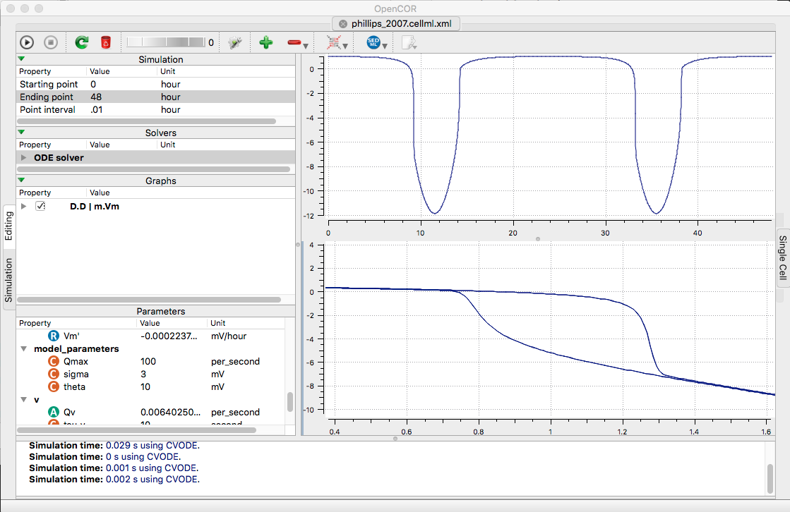

The models for the paper:
Phillips AJ, Robinson PA (2007) A quantitative model of sleep-wake
dynamics based on the physiology of the brainstem ascending arousal
system. J Biol Rhythms 22:167-79[PubMed]
are available at the cellml.org website:
https://models.cellml.org/exposure/87ef0e70902ed8a49d10252617835aa9/phillips_2007.cellml/view
Example: Open the supplied model file in opencor. Change the
ending point to 48 Hours, the point interval to 0.01, and open two
graphs (click plus sign twice). For the first graph right-clicking
Vm in m list (select Plot against intergration variable), and for
the second right click V and select to plot against -> D ->D. Finaly
run (click upper left play triangle) creates the following graph
similar to fig 3's inset and dotted lines:
